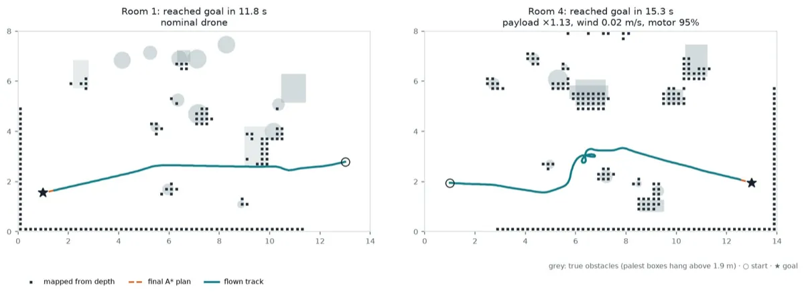

2026 · simulation only; paper draft
Drone Autonomy
A simulated quadrotor that maps unknown rooms, plans with A* and adapts to payload, wind and worn motors; a learned residual roughly halves tuned adaptive control’s error on held-out tasks.
Live demo: replay the flights → Source on GitHub → Paper draft (PDF) →
The question
A quadrotor flying outside the lab meets conditions it wasn’t tuned for: extra payload, a worn motor, wind, command delay. Meta-learning, training a model that adapts from a few flights, promises to cope. Classical control stacks are dependable but fixed.
The question is where meta-learning actually helps once it’s combined with a classical stack.
Setup
A batched simulator modelled on a Holybro X500 V2 (2.0 kg, 500 Hz), commanded the way the PX4 flight stack is: collective thrust plus body rates. Each task draws payload ×0.85–1.3, one motor down to 75%, drag ×0.5–2, wind up to 2.5 m/s with gusts, and 0–30 ms of latency. Out-of-distribution tasks go beyond every range at once.
Seven meta-learners (MAML, FOMAML, ANIL, Meta-SGD, Reptile, PEARL and RL²) plug in as a learned residual added to the controller’s output, as the controller’s gains, or as the local planner. The baselines: the plain geometric controller, L1 adaptive control (estimates the disturbance online and cancels it), one policy trained across all conditions, and fine-tuning.
How it works
- Depth camera builds an occupancy map
- A* plans a path through the map
- Local planner turns it into velocity
- Geometric controller: thrust and body rates
- Learned residual or tuned gains adapt it
- Tasks perturb payload, motors, wind, latency
Results
On 32 held-out tracking tasks, a learned residual trained across all conditions reaches 7.3 cm error with no adaptation at all, against 14.0 cm for tuned L1 adaptive control and 21.4 cm for the plain controller. Meta-learning adds little to that residual: the gradient meta-learners land at 7.7–7.8 cm after adapting.
Meta-learning pays off when it adapts the classical gains instead: Meta-SGD goes from 15.8 to 10.8 cm, 3.5 cm better than tuning without it on paired tasks, and wins 83% of the pairs. For navigation in unseen rooms, the classical local planner reaches 73% success over 96 flights; learned planners reach 31–55%.

What didn’t work
Out of distribution, every method fails: tracking error of at least 63.1 cm and navigation success of at most 17%, and the learned residuals crash more often (43–49% of episodes) than the plain controller (34%). Gradient adaptation at the meta-trained step size makes learned planners worse.
Everything is in simulation, with no real flights yet. Thrust-to-weight, motor lag and drag are estimates, state estimation is perfect, and the number of seeds was limited.
What’s next
Flight tests on the recommended platform, an X500 V2 with a Jetson Orin Nano Super and a RealSense D435i, in five stages: system identification, hover, tracking, known obstacles, then an unknown room.